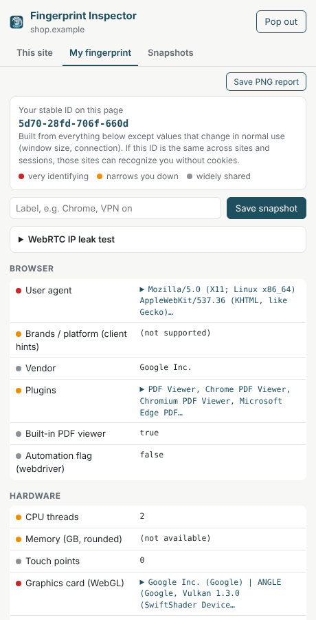
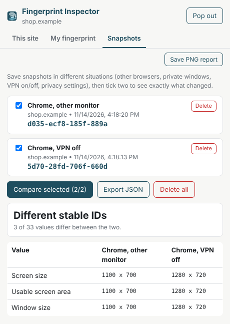
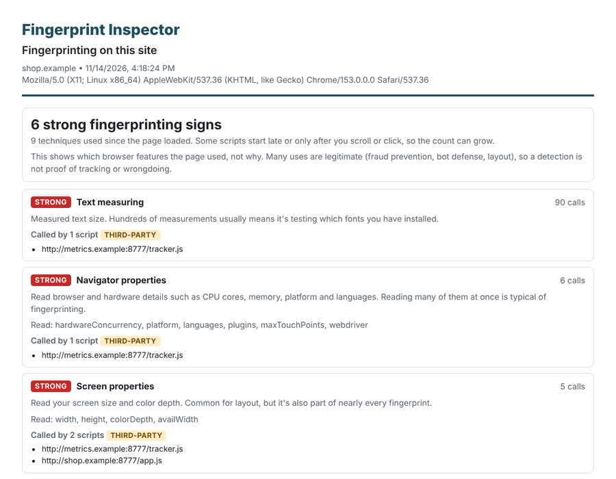

What it shows you
Websites can recognize a browser without cookies by combining dozens of small details: your graphics card, installed fonts, screen, timezone and more. This extension makes that visible.
This site
Which fingerprinting techniques the page you're on used, how often, and which scripts made the calls, with third-party scripts flagged.
My fingerprint
Everything your browser reveals, rated by how identifying it is, rolled up into one stable ID. It also notices when your browser randomizes results to protect you.

Snapshots
Save your fingerprint in different situations, such as another browser, a private window or a VPN, and compare exactly what changed.

Full PNG reports
Every tab has a Save PNG report button that saves a full-length image report to your Downloads folder, with every detail expanded. Each report carries a short disclaimer footer.

Download
Results are estimates, not proof. A detection shows which browser features a page used, not why; many uses are legitimate. The extension is provided as-is, with no warranty. Please read the Disclaimer and Privacy Policy below.
Prefer to read the code first? The full source is on GitHub.
Install
The extension isn't in the browser stores, so it's loaded manually. First unzip the download to a folder you'll keep, because the browser loads it from there.
Chrome, Edge, Brave, Opera, Vivaldi
- Open
chrome://extensions(Edge:edge://extensions, Brave:brave://extensions). - Turn on Developer mode.
- Click Load unpacked and pick the
fingerprint-inspectorfolder. - Read and accept the terms on the welcome tab that opens.
- Pin the extension from the puzzle-piece menu, then reload any open tabs.
Chrome may remind you that a developer-mode extension is installed. That's expected for extensions loaded this way.
Firefox 128+
- Open
about:debugging#/runtime/this-firefox. - Click Load Temporary Add-on and choose
manifest.jsoninside the folder. - Accept the terms when you first open the extension.
Firefox removes temporary add-ons when it closes, so repeat this after a restart.
Questions
Does it block tracking?
No. It only observes and reports. It doesn't change what websites see or stop them from collecting anything.
Does a detection mean a site is tracking me?
Not necessarily. It means the page used browser features that fingerprinting relies on. Many sites use them for fraud prevention, bot and abuse defense, account security or layout, and scripts may come from third parties the site doesn't control.
Is my data sent anywhere?
It isn't designed to send any. It's built to keep everything in your browser, and the only server it's designed to contact is Google's public STUN server, during the optional WebRTC test you start yourself. Because it was vibecoded and hasn't been professionally audited, unforeseen leaks can't be ruled out. See the Privacy Policy.
Who made this, and has it been audited?
It's a personal hobby project by David Feuling, vibecoded with AI-assisted coding. It was tested by its author but has not been reviewed by an independent security professional. The source is public so anyone can inspect it. If you find a problem, please email dhf91@proton.me.
Could having it installed make my browser stand out?
Possibly. The extension watches browser functions as pages use them, and some sites can detect that kind of change. If a site behaves oddly or asks for extra verification, disable the extension for that site.
How accurate is the "very identifying" rating?
It's a rough guide based on public research. Knowing how unique you really are requires comparing your browser with many others; sites such as the EFF's Cover Your Tracks and AmIUnique do that.
Why isn't it in the Chrome Web Store?
It's a personal, open-source project shared as-is. Loading it manually also lets you read every line of the code before you run it.
Disclaimer and Terms of Use
Effective November 14, 2026 (updated for v1.2.2)
Fingerprint Inspector ("the extension") is a free, open-source browser extension by David Feuling (DHF Media) that shows what a web browser reveals to websites and which fingerprinting-related browser features a web page uses. By installing or using the extension, or the website and files that distribute it, you agree to these terms. If you do not agree, do not install or use it.
Read this first: vibecoded software, no guarantees
Fingerprint Inspector is a hobby project that was vibecoded, meaning it was built with AI-assisted coding rather than by a professional security team. It has not been independently security-audited. Although it was tested, it may contain bugs, including unforeseen data leaks, privacy problems or security flaws, and descriptions of how it works (including the Privacy Policy) describe its intended design and the author's own testing, not a guarantee. Installing and using it is entirely at your own risk, and the author accepts no liability for any resulting harm, including any exposure, leak or loss of data. If those risks aren't acceptable to you, do not install it.
1. Not professional advice
The extension and its documentation are for general education and personal curiosity only. Nothing it shows, and nothing in its reports or documentation, is legal, security, privacy, compliance or technical advice. For decisions that matter (legal compliance, security assessments, privacy obligations, disputes), consult a qualified professional.
2. Accuracy and limitations
Results are estimates, and they can be incomplete or wrong.
- Ratings are rough guides. Labels such as "very identifying," "narrows you down," "strong" and "weak" are based on general public research about browser fingerprinting. They are not measurements of how unique your browser actually is, which would require comparison with a large population of browsers.
- The stable ID is local. The ID shown by the extension is a hash calculated on your own computer from the values it collects. It is not the same ID any particular website calculates, and two different sites may see you differently.
- False positives. The extension flags the use of browser features, and those features have many ordinary purposes.
- False negatives. Some fingerprinting can go undetected, including code running in web workers, code that obtains unmodified browser functions before the extension loads, techniques the extension does not watch, and anything done on a website's servers.
- Results vary with browser, version, operating system, hardware, settings, other extensions, network conditions, and the moment a page was inspected. A report reflects one browser at one point in time.
- The WebRTC test only reports what your browser revealed during that test, from the extension's context. It does not prove that any connection, VPN or proxy is or is not secure.
3. Detections are not accusations
A detection means a web page used certain browser features while you visited it. It does not mean the website is tracking you, identifying you, violating any law or policy, or doing anything wrong. Many legitimate services use these features for fraud prevention, bot and abuse defense, account security, accessibility, performance and page layout. Scripts may also come from third parties the website does not control.
Do not present the extension's results or reports as proof of wrongdoing by any person, company or website.
4. Acceptable use
You agree to:
- Use the extension only on browsers and devices that you own or are authorized to test.
- Comply with all applicable laws and regulations and with the terms of service of websites you visit.
- Not use the extension, its code, or its results to track, identify, profile, harass or surveil any other person; to evade, attack or interfere with security, anti-fraud or anti-abuse systems; or for any unlawful purpose.
If you build on the code (it is open source under the MIT License), you alone are responsible for how your version collects, uses and discloses information, including any notice, consent or other obligations under privacy laws such as the GDPR, the UK GDPR, the ePrivacy Directive, the CCPA/CPRA and similar laws.
5. Website compatibility
To observe fingerprinting, the extension wraps certain browser functions inside web pages. These wrappers pass calls through unchanged, but some websites may detect browser extensions, behave differently, show extra verification steps, treat your visit as automated, restrict features, or fail to work correctly. If a site misbehaves, disable the extension for that site or remove it. You are responsible for any effect its use has on your accounts, transactions or online activity.
6. Privacy
The extension is designed not to collect, transmit, sell or share your data, but as explained above, this cannot be guaranteed. See Privacy Policy for details, including the one intended network request (the optional WebRTC test) and what saved reports contain.
7. No warranty
THE EXTENSION, ITS SOURCE CODE, ITS DOCUMENTATION AND THE WEBSITE DISTRIBUTING IT ARE PROVIDED "AS IS" AND "AS AVAILABLE," WITHOUT WARRANTY OF ANY KIND, EXPRESS OR IMPLIED, INCLUDING BUT NOT LIMITED TO WARRANTIES OF MERCHANTABILITY, FITNESS FOR A PARTICULAR PURPOSE, ACCURACY, SECURITY, PRIVACY, NON-INFRINGEMENT, AND UNINTERRUPTED OR ERROR-FREE OPERATION. Updates, support and continued availability are not guaranteed.
8. Limitation of liability
TO THE MAXIMUM EXTENT PERMITTED BY APPLICABLE LAW, IN NO EVENT SHALL THE AUTHOR OR CONTRIBUTORS BE LIABLE FOR ANY DIRECT, INDIRECT, INCIDENTAL, SPECIAL, CONSEQUENTIAL, EXEMPLARY OR PUNITIVE DAMAGES, OR ANY LOSS, LEAK OR EXPOSURE OF DATA, OR LOSS OF PROFITS, ACCESS, ACCOUNTS OR GOODWILL, ARISING OUT OF OR IN CONNECTION WITH THE INSTALLATION, USE OR INABILITY TO USE THE EXTENSION, RELIANCE ON ITS RESULTS, BUGS OR DEFECTS IN IT, WEBSITE MALFUNCTIONS, OR ANY SHARING OF ITS REPORTS, WHETHER IN CONTRACT, TORT (INCLUDING NEGLIGENCE) OR OTHERWISE, EVEN IF ADVISED OF THE POSSIBILITY OF SUCH DAMAGES.
Some jurisdictions do not allow certain warranty exclusions or liability limits, so some of the above may not apply to you. In that case, they apply to the fullest extent permitted.
9. Your responsibility
You use the extension at your own risk and are solely responsible for how you use it and its results. To the extent permitted by law, you agree to hold harmless the author and contributors from claims arising from your use or misuse of the extension, your violation of these terms, or your violation of any law or third-party right.
10. Third parties
Browser, company and product names mentioned (including Google, Chrome, Microsoft, Edge, Mozilla, Firefox, Brave, Opera and Vivaldi) are trademarks of their respective owners. The extension is an independent project and is not affiliated with, endorsed by or sponsored by any of them or by any website it inspects. Links to outside resources are provided for convenience and are not endorsements.
11. Changes
These terms may be updated. The current version is published at https://davidfeuling.com/fingerprint-inspector/ and in the project repository. If the terms shown in the extension change, it will ask you to accept them again.
12. Contact
Questions or problems: dhf91@proton.me
Privacy Policy
Effective November 14, 2026 (updated for v1.2.2)
Short version: Fingerprint Inspector is designed to keep everything it records in your browser on your computer, and is not designed to collect or send your data. The only server it is designed to contact is Google's STUN server, during the optional WebRTC test, and only when you click "Run test."
No guarantees: please read
Fingerprint Inspector is a hobby project that was vibecoded (built with AI-assisted coding) and has not been independently security-audited. This policy describes how the extension is designed to work and how it behaved in the author's own testing. It cannot rule out bugs, including unforeseen data leaks or privacy problems, in your browser, version or setup. You install and use it entirely at your own risk, and the author accepts no liability for any outcome, including any exposure or loss of data. See the Disclaimer. If you find a problem, please report it to dhf91@proton.me.
What the extension stores, and where
| Data | Where it's kept | How long |
|---|---|---|
For each open tab: the page's address (with any ?query or #fragment removed), the fingerprinting techniques seen, how often, and the addresses of the scripts that used them (also with query strings removed) |
Your browser's session storage for the extension | Cleared when the tab closes or the browser quits |
| Snapshots you choose to save (the site's name and the fingerprint values shown on the My fingerprint tab) | Your browser's local storage for the extension, on this device only (not synced) | Until you delete them or remove the extension |
| Whether you accepted the terms, and when | Your browser's local storage for the extension | Until you remove the extension |
The extension is not designed to transmit any of this to the author or anyone else. It has no accounts, analytics, telemetry, ads, trackers, update checks or remote servers.
Network requests
The extension is not designed to make network requests on its own. The one intended exception only happens when you ask for it:
- WebRTC IP leak test. Clicking "Run test" contacts Google's public STUN server (
stun.l.google.com, port 19302). As with any WebRTC connection, that server sees your public IP address, and Google's handling of it is governed by Google's privacy policy. Like any WebRTC check, it may also send standard local-network discovery traffic (mDNS) on your own network. The results are shown only to you.
Other details:
- Font checks are designed to avoid downloads. When checking which fonts are installed, the extension skips any font name the website supplies as its own web font, because measuring such a font would make the browser download it. Those fonts are listed as "not checked on this site."
- Links you click (such as the Disclaimer link in the extension) open web pages the same way any link does.
- Your browser's own features, such as sync, download scanning or crash reporting, behave according to your browser's settings and its own privacy policy. The extension doesn't use or change them.
What websites are meant to see
- The extension is designed not to pass data to websites. Its internal reports travel over a private channel set up before a page's own scripts run, which is meant to keep the page from reading them.
- To observe fingerprinting, the extension wraps certain browser functions inside each page. It doesn't change what pages show you or the results those functions return, but a determined website may be able to tell that a function was wrapped and infer that an extension like this is installed. See section 5 of the Disclaimer.
Permissions and why they're needed
- Read data on all websites (content scripts on all sites): needed to watch which browser features each page uses and to gather your fingerprint as websites would see it. The extension reads browser and device properties, the page's address, and which scripts call the watched features. It is not designed to read page text, form contents, passwords, cookies or your browsing history.
- Storage: to keep the tab results, snapshots and terms acceptance described above.
- Downloads: to save PNG reports and JSON exports to your Downloads folder when you ask it to.
Reports and exports
PNG reports and JSON exports are created on your computer and saved only where you put them. They can contain details about your browser and device (such as your user agent, graphics card, screen size, timezone, languages and installed fonts), the sites and script addresses you inspected, and, if you ran the WebRTC test, IP addresses. Review and redact them before sharing publicly.
The website
The download page at davidfeuling.com is hosted on GitHub Pages. GitHub may log technical information about visits (such as IP addresses) under the GitHub Privacy Statement. The page itself is built without cookies, analytics, trackers, or third-party fonts or scripts, and its donation QR codes are drawn in your browser rather than fetched from a server.
Removing your data
Delete snapshots from the Snapshots tab, or remove the extension from your browser to erase everything it stored.
Children
The extension is not directed at children and is not designed to collect personal information from anyone.
Changes and contact
Updates to this policy are published with the project at https://davidfeuling.com/fingerprint-inspector/. Questions: dhf91@proton.me